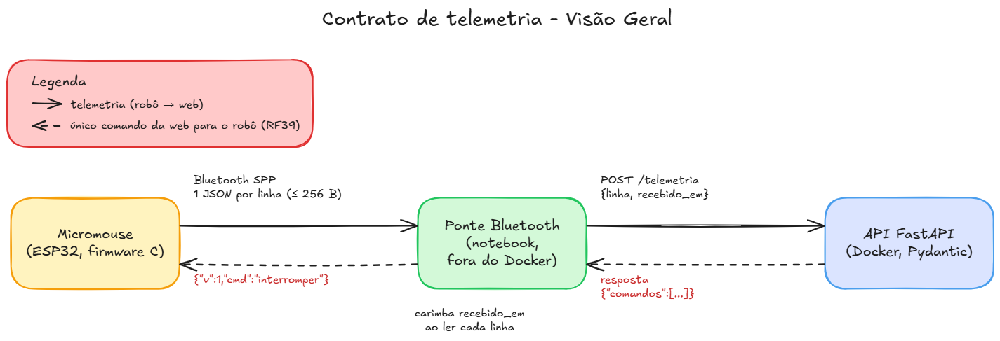

Contrato de Telemetria¶
Apêndice do Projeto conceitual de software. Define, sem ambiguidade, as mensagens trocadas entre o Micromouse, a ponte Bluetooth e o backend, para que as três partes possam ser implementadas e testadas separadamente (RNF-B13). Resolve as pendências "Formato das mensagens de telemetria" e "Detalhes da ponte Bluetooth" da arquitetura.
Versão do contrato: 1.
Fonte única dos exemplos: src/contrato/exemplos.jsonl. Os exemplos desta página são cópias desse arquivo, e os testes do backend e do firmware conferem que cada lado gera exatamente essas linhas (seção Implementações e testes).
Visão geral¶
Figura 1: Visão geral do contrato de telemetria

Fonte: Wanjo Christopher Paraizo Escobar, 2026. · Fonte editável (Excalidraw)
- O robô só envia telemetria. Ele recebe apenas os três comandos do contrato:
interromper,largarehealth_check(seção Comando da web para o robô, RF39, RNF06). - A ponte é "burra": não interpreta as mensagens. Ela lê cada linha da serial, anota a hora em que leu e repassa à API. Toda a validação fica no backend.
Enquadramento¶
- Uma mensagem por linha, em JSON compacto (sem espaços), codificado em UTF-8 e terminado em
\n. - Cada linha tem no máximo 256 bytes, contando o
\n. - A ordem das chaves é a dos exemplos. O backend não depende da ordem, mas o firmware sempre gera nessa ordem, o que permite comparar byte a byte nos testes.
Campos comuns¶
Toda mensagem do robô começa com estes campos.
Tabela 1: Campos comuns a todas as mensagens
| Campo | Tipo | Unidade / faixa | Descrição |
|---|---|---|---|
v |
inteiro | sempre 1 |
Versão do contrato. O backend descarta qualquer outro valor (seção Versionamento). |
boot |
inteiro | 0 a 4 294 967 295 | Contador de inicializações do robô, guardado na NVS e somado em 1 a cada vez que ele liga. |
seq |
inteiro | 0 a 4 294 967 295 | Número da mensagem dentro do boot. Volta a 0 quando o robô liga e soma 1 a cada mensagem, de qualquer tipo. |
t_ms |
inteiro | ms, 0 a 4 294 967 295 | Milissegundos desde que o robô ligou, no instante do envio. |
tipo |
texto | ver Mensagens do robô | Define os demais campos. |
Fonte: Wanjo Christopher Paraizo Escobar, 2026.
O par (boot, seq) identifica cada mensagem de forma única, mesmo depois de o robô reiniciar em uma retomada (RF38).
Mensagens do robô¶
As mensagens se dividem em dois grupos:
- Amostra: a
tel. Se uma se perder, a seguinte chega logo e a substitui. Não é reenviada. - Eventos:
hc_item,hc_resultado,passo,falhaesucesso. Cada um registra algo que aconteceu uma vez e não pode se perder; por isso entram no buffer de reenvio (seção Reconexão).
tel: estado atual do robô¶
Enviada continuamente: 5 por segundo com o robô em movimento e 1 por segundo parado. Alimenta o painel ao vivo, serve de sinal de vida para o RF31 (10 s sem mensagem = link perdido) e cumpre o RF08 (célula, bateria e instante de envio).
{"v":1,"boot":7,"seq":42,"t_ms":11250,"tipo":"tel","estado":"running","x":0,"y":2,"rumo":"N","bat_mv":7810,"vel_mm_s":210,"eixo_longo":null}
Tabela 2: Campos da mensagem tel
| Campo | Tipo | Unidade / faixa | Descrição |
|---|---|---|---|
estado |
texto | health-check, running, success ou failed |
Fase da tentativa do ponto de vista do robô (RF16). |
x, y |
inteiro | célula, 0 a 11 | Célula atual, no referencial do robô. |
rumo |
texto | N, S, L ou O |
Direção para a qual o robô aponta, no mesmo referencial. A web a usa para desenhar o robô. |
bat_mv |
inteiro | mV, 0 a 10 000 | Tensão da bateria. O backend converte para % pela curva da fonte definida pela Energia (RF11). |
vel_mm_s |
inteiro | mm/s, 0 a 2 000 | Velocidade medida pelos encoders (RF22). |
eixo_longo |
texto ou nulo | x, y ou null |
Eixo em que o labirinto 8x4 ou 12x4 se estende. null enquanto o robô não sabe, e sempre no 4x4. |
Fonte: Wanjo Christopher Paraizo Escobar, 2026.
hc_item: um componente do health-check¶
Enviada uma vez por componente, assim que o robô termina de testá-lo (RF29). A web marca o checklist em tempo real e mostra qual componente reprovou.
{"v":1,"boot":7,"seq":0,"t_ms":412,"tipo":"hc_item","componente":"bateria","aprovado":true,"valor":7840}
{"v":1,"boot":7,"seq":5,"t_ms":1630,"tipo":"hc_item","componente":"motor_esquerdo","aprovado":true,"valor":null}
Tabela 3: Campos da mensagem hc_item
| Campo | Tipo | Unidade / faixa | Descrição |
|---|---|---|---|
componente |
texto | um dos 8 da lista fixa (Tabela 4) | Componente verificado. |
aprovado |
booleano | true ou false |
Resultado da verificação. |
valor |
inteiro ou nulo | unidade conforme o componente (Tabela 4) | Medida que justificou o resultado. |
Fonte: Wanjo Christopher Paraizo Escobar, 2026.
Tabela 4: Componentes do health-check e unidade do valor
| Componente | valor |
|---|---|
bateria |
Tensão em mV. |
tof_frontal, tof_esquerdo, tof_direito |
Distância lida, em mm. |
encoder_esquerdo, encoder_direito |
Pulsos contados ao girar o motor no teste. |
motor_esquerdo, motor_direito |
null: o motor é aprovado pelo próprio encoder. |
Fonte: Wanjo Christopher Paraizo Escobar, 2026.
hc_resultado: fim do health-check¶
Enviada uma vez, depois do último hc_item. Traz o tipo de labirinto lido no DIP switch (RF27) e se a tentativa começa do zero ou continua o mapa gravado (RF38).
{"v":1,"boot":7,"seq":10,"t_ms":2380,"tipo":"hc_resultado","aprovado":true,"tipo_dip":"4x4","inicio":"nova"}
Tabela 5: Campos da mensagem hc_resultado
| Campo | Tipo | Unidade / faixa | Descrição |
|---|---|---|---|
aprovado |
booleano | true ou false |
Resultado geral. Se false, o robô não anda e o backend recusa abrir a tentativa (health_check_reprovado). |
tipo_dip |
texto | 4x4, 8x4, 12x4 ou invalido |
Tipo lido nas vias 1 e 2 do DIP switch. invalido (código 11) sempre vem com aprovado = false. |
inicio |
texto | nova ou retomada |
retomada quando o robô continua o mapa e a posição gravados na flash (RF42). |
Fonte: Wanjo Christopher Paraizo Escobar, 2026.
O backend compara o tipo_dip com o tipo informado em Nova execução. Se divergirem, o backend recusa abrir a tentativa (dip_divergente) e a web mostra um alerta (ver Tipo do labirinto e orientação).
passo: uma célula do trajeto¶
Enviada toda vez que o robô entra em uma célula, inclusive quando volta a uma célula já visitada; senão, o trajeto ficaria com buracos. Alimenta o desenho do mapa e do trajeto na web (RF09, RF37).
Tabela 6: Campos da mensagem passo
| Campo | Tipo | Unidade / faixa | Descrição |
|---|---|---|---|
x, y |
inteiro | célula, 0 a 11 | Célula em que o robô entrou. |
paredes |
inteiro | máscara, 0 a 15 | Soma das paredes presentes: N = 1, S = 2, L = 4, O = 8. |
Fonte: Wanjo Christopher Paraizo Escobar, 2026.
No exemplo, 9 = 1 + 8: paredes ao norte e a oeste.
falha: a tentativa parou sem chegar¶
Enviada quando o robô para por conta própria, quando confirma uma interrupção da web ou quando o operador toca no BOOT durante a corrida (RF41).
{"v":1,"boot":7,"seq":88,"t_ms":25120,"tipo":"falha","motivo":"falha_componente","origem":"automatica","x":2,"y":3,"componente":"tof_direito"}
{"v":1,"boot":8,"seq":57,"t_ms":19870,"tipo":"falha","motivo":null,"origem":"web","x":1,"y":2,"componente":null}
{"v":1,"boot":9,"seq":63,"t_ms":21040,"tipo":"falha","motivo":"encerrado_operador","origem":"boot","x":1,"y":3,"componente":null}
Tabela 7: Campos da mensagem falha
| Campo | Tipo | Unidade / faixa | Descrição |
|---|---|---|---|
motivo |
texto ou nulo | collision, stuck, falha_componente, low_battery, encerrado_operador ou null |
Motivo da parada (RF15). Depende da origem (Tabela 8). |
origem |
texto | automatica, web ou boot |
Quem causou a parada. |
x, y |
inteiro | célula, 0 a 11 | Célula em que o robô parou; ponto de partida da retomada. |
componente |
texto ou nulo | um dos 8 da Tabela 4, ou null |
Preenchido só quando motivo = falha_componente. |
Fonte: Wanjo Christopher Paraizo Escobar, 2026.
Tabela 8: Combinações válidas de origem e motivo
origem |
motivo |
Como o backend registra |
|---|---|---|
automatica |
collision, stuck, falha_componente ou low_battery |
Cria a FALHA com o motivo e a origem automatica. |
web |
null |
Só confirma a interrupção. A FALHA já foi criada pelo modal Encerrar tentativa, com o motivo escolhido; o backend atualiza a célula com o x, y recebidos, porque é onde o robô de fato parou. |
boot |
encerrado_operador |
Cria a FALHA com motivo e origem encerrado_operador (RF41). |
Fonte: Wanjo Christopher Paraizo Escobar, 2026.
Os motivos time_exceeded e link_lost são decididos só pelo backend (RF31, RF32) e nunca vêm do robô. O out_of_track só é escolhido pelo operador no modal. Um health-check reprovado vai no hc_resultado, sem falha separada.
sucesso: o robô chegou ao objetivo¶
Enviada uma vez, quando o robô entra em uma célula de objetivo do tipo selecionado no DIP switch (RF26).
Tabela 9: Campos da mensagem sucesso
| Campo | Tipo | Unidade / faixa | Descrição |
|---|---|---|---|
x, y |
inteiro | célula, 0 a 11 | Célula de objetivo alcançada. |
Fonte: Wanjo Christopher Paraizo Escobar, 2026.
Referencial e paredes¶
As coordenadas estão no referencial do robô, descrito em Tipo do labirinto e orientação:
- A largada é a célula (0, 0). O eixo y aponta para a saída do beco da largada.
- O sinal de x é fixado na primeira abertura lateral. Antes disso o robô só anda em y, com x = 0.
- Com isso,
xeyestão sempre entre 0 e 11.
A máscara de paredes e o rumo usam direções absolutas nesse referencial: N = +y, S = −y, L = +x e O = −x. Enquanto o sinal de x não está fixado, as células visitadas têm parede dos dois lados, então L e O não são ambíguos. O firmware só envia o passo da célula da primeira abertura lateral depois de fixar o sinal.
Desenho na web. No 8x4 e no 12x4, o robô não sabe de antemão se o lado longo do labirinto fica em x ou em y. Enquanto eixo_longo for null, a web desenha só o canto 4x4 junto à largada e expande a grade quando ele passa a x ou y. O robô define o eixo_longo ao entrar na primeira célula com x > 3 ou y > 3.
Taxas¶
Tabela 10: Taxas de envio
| Mensagem | Taxa |
|---|---|
tel |
5 por segundo em movimento; 1 por segundo parado. |
| Eventos | Na hora em que acontecem (um passo a cada célula). |
| Reenvio depois de uma reconexão | No máximo 20 por segundo, além da tel. |
Fonte: Wanjo Christopher Paraizo Escobar, 2026.
Em regime normal, o total fica abaixo das 10 mensagens por segundo do RNF-B11. A tel a 1 Hz com o robô parado mantém o sinal de vida, sem uma mensagem heartbeat separada.
Comando da web para o robô¶
São três comandos. Todos seguem a mesma regra: o backend devolve o comando em toda resposta ao POST /telemetria até o robô mostrar que o atendeu. Assim, um comando não se perde se uma resposta cair, e repeti-lo não tem efeito colateral.
Interrupção do encerramento manual (RF30, RF39):
- Vai nas respostas até a
falhacomorigem=webque confirma a parada, ou até abrir uma nova tentativa. - O robô para, envia a
falhade confirmação e ignora o comando se já estiver parado, apenas repetindo a confirmação. - Com o robô em movimento, a
tela 5 Hz faz o comando chegar em até cerca de 200 ms. Sem link, o comando chega na reconexão; a parada sem rede continua sendo o botão BOOT (RF41).
Largada, dada pelo operador em Nova execução ou Retomar:
- Vai nas respostas até a primeira
telcomestado=runningou o primeiropasso. - O robô só parte com o último health-check aprovado; enquanto espera, manda
telcomestado=health-checka 1 Hz.
Novo health-check, pedido pelo operador (botão Pedir novo health-check), por exemplo depois de um reprovado, de trocar o DIP ou de passar a validade de 7 minutos:
- Vai nas respostas até o primeiro
hc_itemouhc_resultado, ou até uma largada. - O robô só atende parado, fora de uma tentativa; o backend recusa o pedido (409) com uma tentativa em
running. - O robô roda o health-check completo e envia os
hc_iteme ohc_resultado, como faz ao ligar.
Ponte e API¶
A ponte roda no notebook, fora do Docker, e conversa com a API por um único endpoint.
POST /telemetria
linha: a linha lida da serial, sem o\n, sem nenhuma alteração.recebido_em: instante em que a ponte leu a linha, com fuso horário. É o ponto mais próximo do rádio, então o RNF-B04 mede o backend sem o atraso da ponte.
Resposta
A lista vem vazia ({"comandos":[]}) quando não há comando. A ponte escreve cada comando na serial como JSON compacto, terminado em \n.
API fora do ar. Se o POST falhar, a ponte guarda as linhas numa fila em memória e as reenvia em ordem quando a API voltar, com no máximo 100 linhas (10 s a 10 mensagens por segundo). Com a fila cheia, a ponte descarta primeiro as linhas não classificáveis (que não são um objeto JSON com tipo), depois a tel mais antiga e, por último, o evento mais antigo. Esse é o único ponto em que ela olha o conteúdo da linha, e só o tipo, sem alterá-la. O robô continua a corrida normalmente (RNF-B07).
Validação no backend¶
O backend valida cada linha com o schema Pydantic do contrato. Uma linha é descartada e registrada só em log, sem interromper o serviço (RNF-B09), quando:
- passa de 256 bytes ou não é JSON;
- tem
vdiferente de 1 outipodesconhecido; - falta um campo, um campo tem o tipo errado ou um valor sai da faixa das tabelas;
origem,motivoecomponentedafalhanão combinam (Tabela 8);- a célula está fora dos limites do labirinto da execução. Por exemplo, num 4x4,
xouymaior que 3.
Campos extras desconhecidos são ignorados, sem descartar a mensagem.
Mensagem sem tentativa aberta. Se não houver tentativa em running (por exemplo, o robô foi ligado antes de Nova execução, ou a mensagem chegou atrasada depois de um encerramento), a mensagem é descartada e registrada só em log. A exceção é a falha com origem = web, que confirma a interrupção da tentativa recém-encerrada.
Reconexão e mensagens repetidas¶
Regra para quedas de até 10 s (RNF-B08). A partir de 10 s sem mensagem, vale o RF31 (link_lost).
- No firmware: todo evento entra num buffer circular de 64 eventos no momento em que é gerado, em ordem de
seq. Em 10 s de queda, o pior caso é de cerca de 15passoe alguns outros eventos, então o buffer não enche. Se encher, o evento mais antigo é descartado. - Ao reconectar: o robô reenvia o buffer inteiro, do mais antigo para o mais novo, a no máximo 20 por segundo. Eventos novos entram no fim do buffer e saem depois dos antigos, então os eventos sempre chegam em ordem de
seq. Atelcontinua saindo normalmente e não é reenviada. - No backend: para cada
boot, guarda o maiorseqde evento já aceito. Um evento comseqmenor ou igual a esse é repetido e é descartado. Atelnão passa por essa regra.
Não há confirmação (ack) do backend para o robô: reenviar o buffer inteiro custa no máximo 64 linhas por reconexão e mantém o downlink restrito aos três comandos do contrato (RNF06).
Tempo e horário de Brasília¶
- O relógio oficial é o do backend. O
recebido_emé gravado comoTIMESTAMPTZ: o PostgreSQL guarda em UTC e a web mostra emAmerica/Sao_Paulo. Os tempos de tentativa e de execução (RF13, RF32) usam esse relógio. - O robô não tem relógio de parede nem recebe comando de sincronia. O
t_msmede o instante de envio no relógio interno do robô. - O backend converte o
t_msem hora real e grava emenviado_em(RF08). Na primeira mensagem aceita de cadaboot, ele calcula uma âncora =recebido_em−t_ms, fixada só depois de a mensagem ser gravada; em cada mensagem seguinte do mesmoboot,enviado_em= âncora +t_ms. O erro é a latência do Bluetooth na primeira mensagem, da ordem de dezenas de milissegundos, e os intervalos entre mensagens do mesmobootsaem exatos. Assim, oenviado_emtambém é exibido em horário de Brasília. - A interrupção é gerada pelo próprio backend, então o horário dela é exato.
Versionamento¶
O campo v protege contra firmware e backend em versões diferentes do contrato, por exemplo um robô gravado com firmware antigo.
Tabela 11: Quando mudar a versão
| Mudança | Exemplo | Versão |
|---|---|---|
| Acrescentar um campo opcional | temp_c na tel |
Continua v = 1. Quem não conhece o campo o ignora. |
| Mudar ou remover um campo, ou mudar uma unidade | bat_mv → bat em % |
Passa a v = 2, com firmware e backend mudando juntos, num PR aprovado pelos dois. |
Fonte: Wanjo Christopher Paraizo Escobar, 2026.
O backend aceita só v = 1 e descarta as outras versões com registro em log, o que deixa o erro visível em vez de gravar dados errados.
Onde cada mensagem é gravada¶
Tabela 12: Mensagens e tabelas do banco
| Mensagem | Tabela do DER | Observação |
|---|---|---|
tel |
LEITURA_TELEMETRIA |
Uma linha por tel. bat_mv → bateria (em mV); vel_mm_s → velocidade; t_ms → enviado_em (seção Tempo). O boot e o seq só servem à deduplicação, em memória, e não são gravados. |
hc_item |
HEALTH_CHECK_ITEM |
valor → valor_lido. |
hc_resultado |
TENTATIVA |
tipo_dip e inicio → tipo_dip e tipo_inicio; muda o status para running ou failed. |
passo |
PASSO_TRAJETO e PAREDE_CELULA |
Na mesma transação; paredes → paredes_mask e as quatro colunas de parede. |
falha |
FALHA e TENTATIVA |
Conforme a Tabela 8. |
sucesso |
TENTATIVA |
Status success e métricas finais. |
Fonte: Wanjo Christopher Paraizo Escobar, 2026.
Implementações e testes¶
Tabela 13: Arquivos do contrato
| Arquivo | Conteúdo |
|---|---|
src/contrato/exemplos.jsonl |
Um exemplo real de cada tipo de mensagem. Fonte única dos exemplos desta página. |
src/backend/contrato/telemetria.py |
Schema Pydantic, leitura e escrita das linhas, deduplicação, conversão do t_ms em enviado_em e modelos do POST /telemetria. |
src/backend/tests/test_contrato_telemetria.py |
Lê cada exemplo e o gera de volta byte a byte; testa as linhas inválidas e a deduplicação. |
src/firmware/lib/contrato/telemetria.h e .c |
Estruturas e serializador em C, com snprintf e sem alocação dinâmica. |
src/firmware/lib/contrato/teste/teste_telemetria.c |
Monta as mesmas mensagens e compara byte a byte com o arquivo de exemplos. |
Fonte: Wanjo Christopher Paraizo Escobar, 2026.
Para rodar os testes:
cd src/backend && pip install -e ".[dev]" && pytest # backend (Python 3.11+)
make -C src/firmware/lib/contrato teste # firmware, compilado com gcc no PC
Qualquer mudança no contrato começa pelo exemplos.jsonl. Se o schema Pydantic ou o serializador em C não acompanharem, o teste correspondente falha.